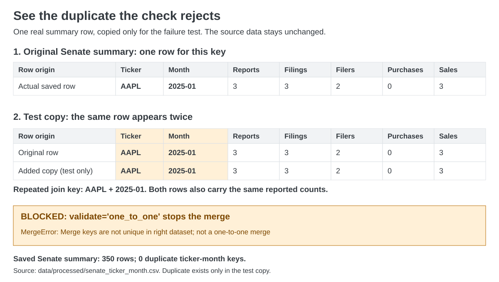

Follow a disclosure from its original document to a verified House–Senate join. Select an outlined field to see the code that reads it—and why that step matters.
Different politicians are not matching entities. First, summarize each chamber to one row per ticker and calendar month. Then compare the two summaries.
The design, before the merge
The actual merge
Raw transaction rows are also combined in a separate table with their chamber and source identity. That append is a convenience; the validated merge below is the P3 join.
The join demonstrations alter copies of the actual House–Senate data: duplicate a Senate key, remove an unmatched result row, and increase a House report count. The same verification suite catches the changed results; original data stays unchanged. A separate selector demonstration catches a page without a report table.
Original files behind this example.
Open each filing to see a screenshot of the captured original HTML and the exact AAPL source row. These are Tuberville’s original report, his Amendment 1, and Capito’s report. Amendments remain separate disclosure records; three report rows do not establish three unique economic trades.

The extra row is introduced only for this test. The original Senate summary has unique ticker-month keys.
How the check blocks duplicate rows
The rule: each ticker and month should appear only once in each summary table.
We took the real AAPL / January 2025 Senate summary row.
We added a second copy to a temporary test table.
We tried to merge it with the House summary. The setting validate="one_to_one" spotted the repeated ticker and month and stopped the merge with an error.
Without this check, the same House row could match both Senate copies, creating an extra result row and potentially inflating the counts.
The check stops processing so the duplicate can be investigated. It does not automatically delete rows. The original data stays unchanged.
Search the report rows included in the 2025 comparison by name, ticker, asset, or filing ID. Use the filters above each column to narrow the table.
Eligible 2025 House and Senate disclosure report rows. Use the column filters to narrow the table.
These are disclosed report rows, including amendments, rather than deduplicated trades. Amounts retain the reported brackets. A dash means the source field is blank.
PORTABLE, REPEATABLE, HONEST ABOUT COVERAGE
What the project does—and why.
A reproducible snapshot
This project builds its House dataset from the PDFs, extraction and cleaning code, and review rules inside this repository. Senate HTML is also parsed locally. Source files, checked outputs, notebook, and verification are bundled here; no other project or Drive mount is needed.
The repository is public. For Colab, download the complete project ZIP and upload it when the setup cell prompts; no GitHub credentials are needed.
Acquisition with guardrails
One request per second, a coursework User-Agent, timeouts, explicit HTTP failures, a checksum-verified disk cache, and no repeated resource requests in a run. The frozen inventory is finite; it has no pagination.
House documents have official public URLs. Senate documents reuse the pinned archive from the existing scraper. This version does not submit the Senate access agreement or bypass a denial.
A8 plan & drift
Compared with the A8 notebook submitted October 14: the same House + Senate sources, a 2025 transaction comparison, an updated October 22 Senate snapshot, archived acquisition, and ticker-month summaries before a one-to-one outer join. A8 records instructor approval of the disclosure topic.
The notebook explains every change, including the one-second request minimum versus A8’s two seconds. Public disclosure records remain identifiable personal information; topic approval is not an unrestricted license.
Limits that stay visible
Senate paper reports are deferred; House scanned or handwritten forms can lack extracted rows.
The two archives have different collection dates. This is not complete or equally sampled chamber coverage.
Amendments remain as report records; tickers are reported labels, not permanent security identifiers.
Public names and disclosed financial details are personal information. Use only the fields needed for this noncommercial coursework; infer no wrongdoing from a record.
Missing amounts stay missing. Range values are never treated as exact dollar totals.
COURSE HANDOFF
Notebook + repository link
Due November 5, 2026 · 11:59 PM Eastern. Self-score: 40/40 (100%). Bench Check 2 is scheduled. Submit the executed notebook and repository link.